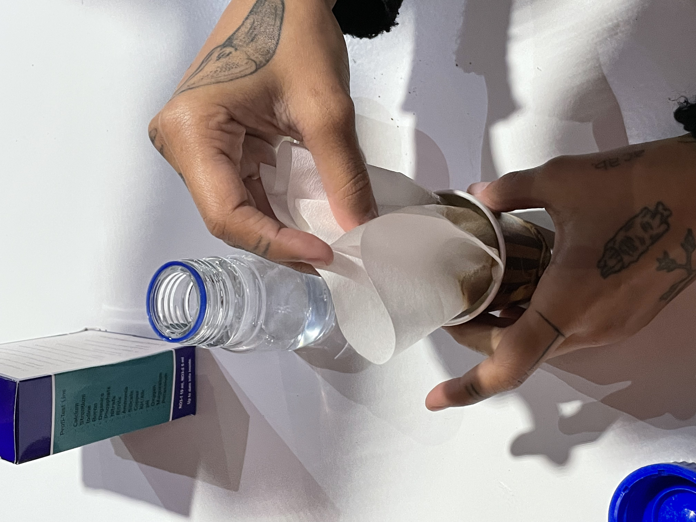
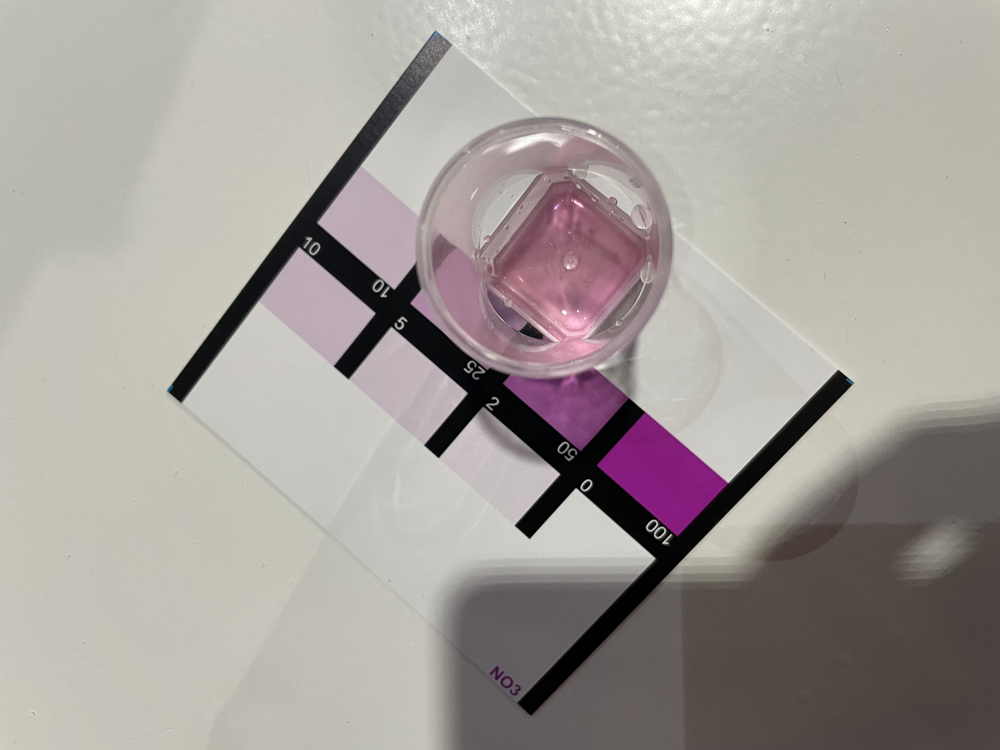
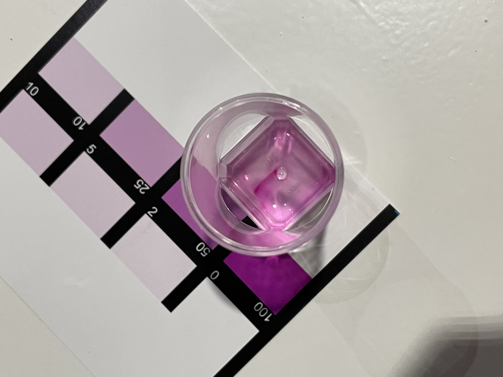
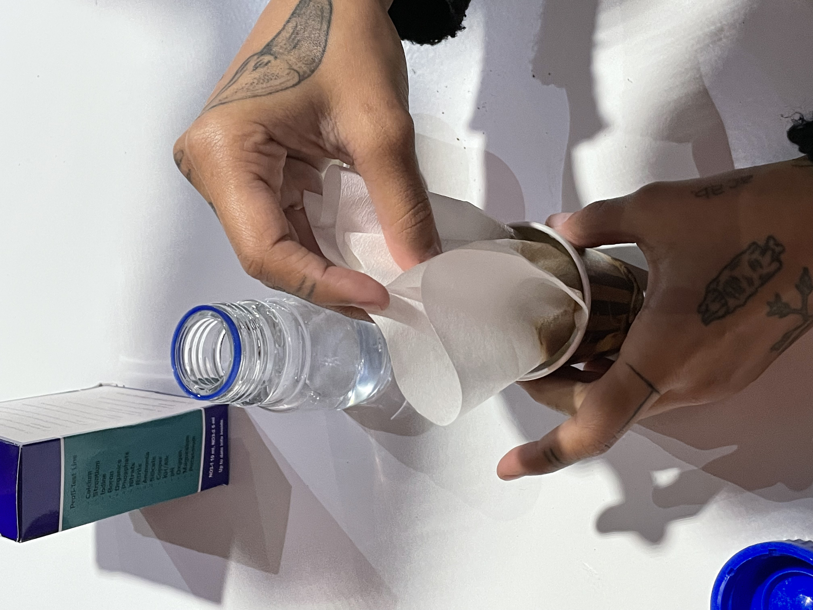
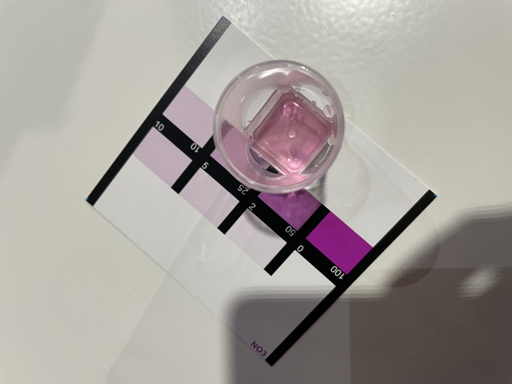
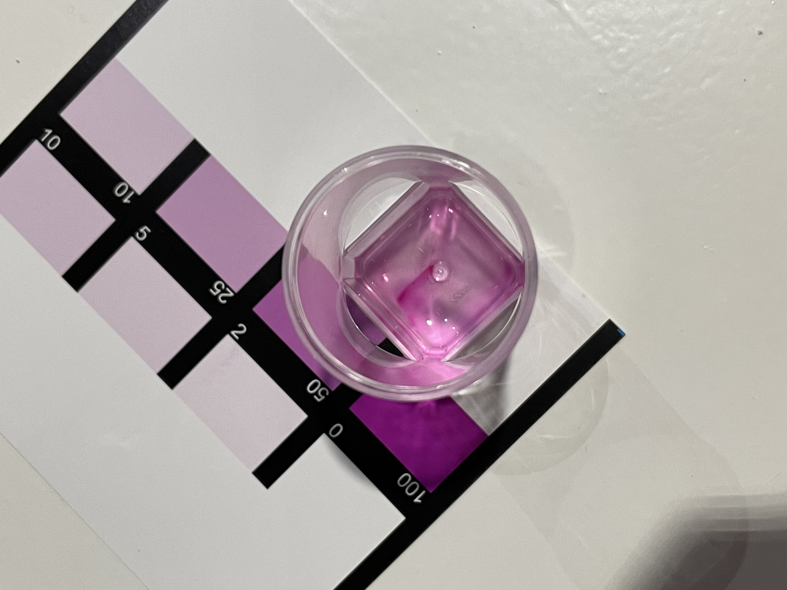

On Conventional Agriculture Alternatives


Transitioning from conventional industrial agriculture (left) to a diverse fruit forest (right).
Classifiying Soil Samples
Following a guideline for classifying different soil types, we had a look at four samples from different parts of the country and of different quality. This meant categorizing the samples into clay, sand and silt, as well as the multiple gradients between those. It became very clear that nutrient-rich hummus differs dramatically from other types of soil both in color and texture. But also the geographic origin was easily distinguished by the color, such as the iron-rich red soil that was collected from Jonathan's patch of land south of Tarragona.


Different impressions from investigating soil samples of several textures and colors.
Investigating Nutrient Compositions
Diving further into investigating the different soil samples, we moved on to testing their chemical composition. In group work, we looked at the level of nitrate, nitrite, PH-level and phosphate. Apart from their differing visual characteristics, the samples also varied in terms of their nutrients. Below the process of measuring nitrate levels is documented alongside its outcomes.
 
PH Tests of old (depleted) soil (left) and fresh, nutrient-rich hummus from Valldaura (right).
On Beekeeping, Hornets and the Varroa destructor
In this lecture we learned all about bees and their crucial role as pollinators, as well as the beekeeping profession and the challenges of that come with it. This, among many, includes an alien species threatening bee populations throughout Europe and North America and a the Varroa Destructor, a parasite which equally contributes to wiping out bee hives across the country. On the positive side, Jonathan highlighted the project of open-source bee hives, which he initiated together with Fab Lab Barcelona. The goal of this project is to give beekeepers across the world access to inexpensive and modular bee hives ready for fabrication on-site. Additionally he highlighted the potentials of equipping these hives with sensors to determine the bee hive's health and monitor more specific aspects like the number of queens present in the hive.
Essential Oils Production
On the very last day, we practiced making essential oils from biomatter, in this case laurel (bay) leaves. It was humbling to see the effort that goes into breaking down the leave's structure by heating it and subsequently cooling the steam, just to extract a handful of milliliters of essential oil from what was originally a sizable bag of leaves. This nicely wrapped up an inspiring and thought-provoking seminar that shed light on the economical and ecological dynamics that shape our current state of agriculture, its individual parts and possible future alternatives.
Distilling essential oil from laurel leaves.